From an assigned child and private observation video to a human-approved, read-only assessment record.
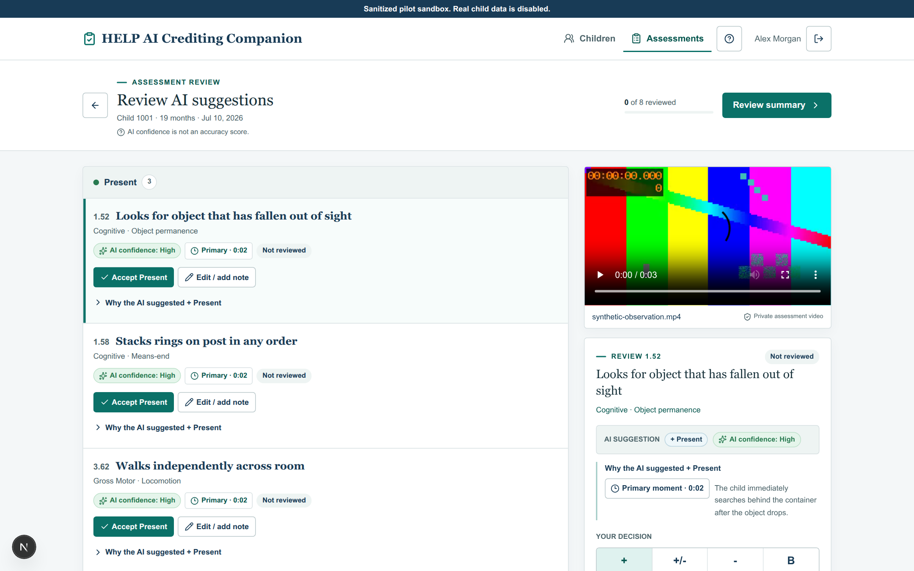
The application always exposes the next valid action. Educators select an assigned child, submit one private observation, review every suggestion, and deliberately lock the final record.
Use the provisioned Educator account or sanitized pilot profile.
Only children assigned to the signed-in educator appear.
Review context and history, then begin an observation.
Confirm date and permission, then verify the private upload.
Processing continues in the background and can be revisited.
Open the validated draft once the status is Ready for review.
Inspect evidence and accept, edit, note, leave blank, or dismiss.
Verify coverage, credits, decision paths, and included skills.
Confirm once. The resulting educator record is read-only.
Proposes Present, Emerging, Not observed, or an unscored item with evidence. It does not determine the final assessment.
The educator watches the observation, decides every final HELP credit, and can add a missed skill.
Finalization preserves the educator-approved result as a read-only record.
The captured sandbox uses approved staff profiles. A configured email/password environment instead shows the provisioned credential form.
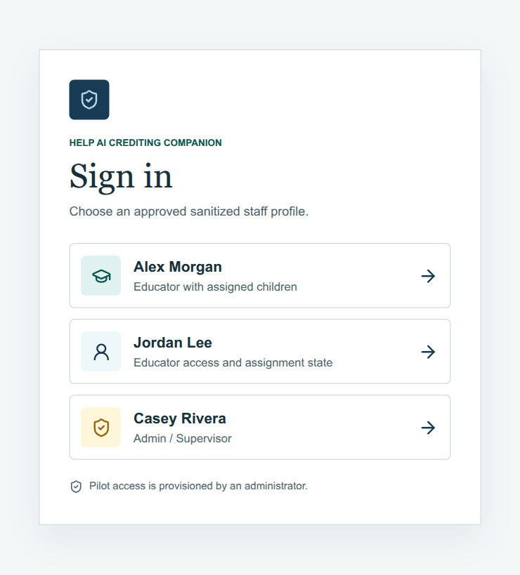
Select Alex Morgan, the sanitized Educator profile with assigned children.
The server creates an Educator-scoped session and opens Assigned children. The session controls which children and assessments can be viewed.
The first screen is a focused roster, not a dashboard. Each row shows the child's current assessment state and the authoritative next action.
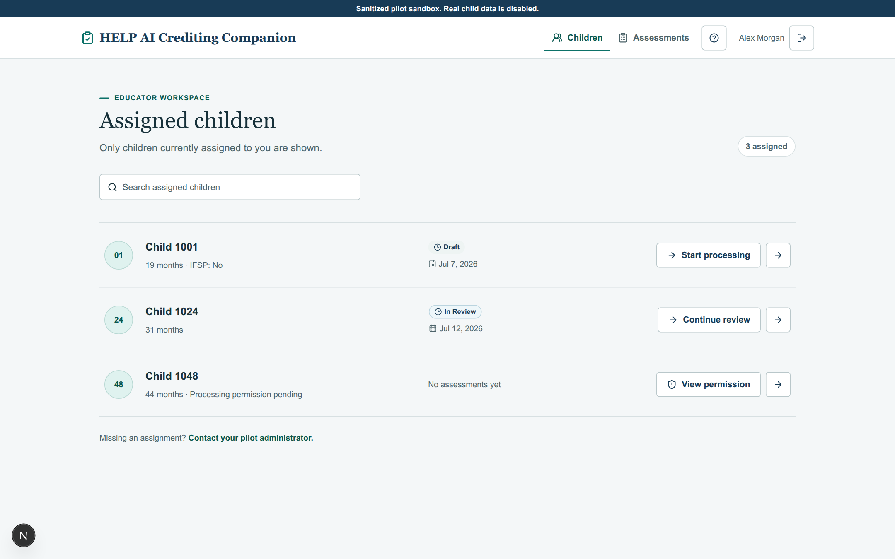
Example: Child 1001 has a Draft, Child 1024 is In Review, and Child 1048 is waiting for processing permission.
Use the local search when needed, then select Child 1001 to open the child record. A status action can also resume the current assessment directly.
Confirm the child identifier and context before proceeding. Only currently assigned children should be visible.
The child record keeps age, IFSP context, and assessment history together so the educator can orient before adding a new observation.
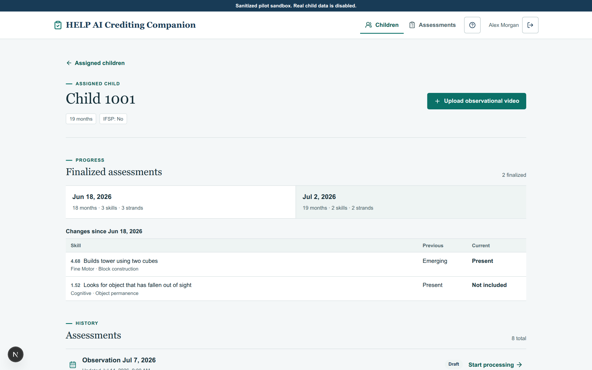
Primary action: Upload observational video starts a new assessment for this assigned child.
Review the child header and recent history. Select Upload observational video when the new video belongs to this child.
Each assessment remains a separate dated record. Finalized observations also show age snapshots and changes from the prior assessment.
Intake binds one observation date and one private video to the assessment draft before any analysis can start.
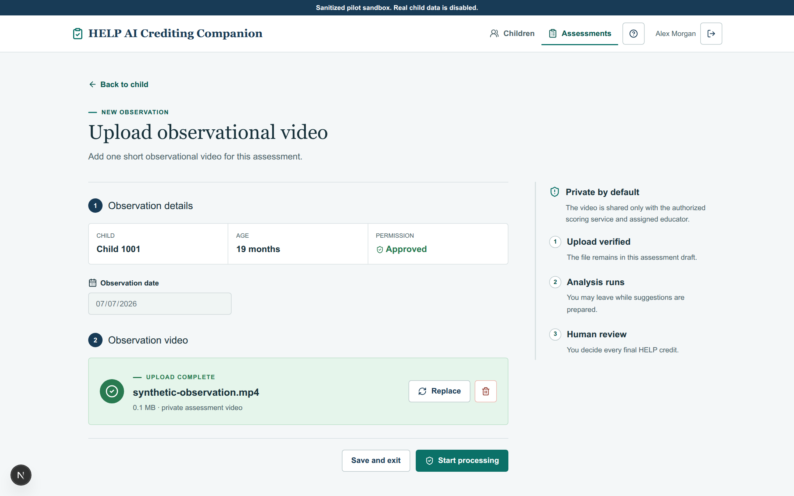
Ready state: the date is locked, permission is approved, and the uploaded filename is shown as complete.
Confirm child, age, permission, and observation date. After the video says Upload complete, select Start processing.
Replace or remove the uploaded video before processing. Save and exit keeps the verified draft for later.
The status page separates upload, security, analysis, and review readiness so progress is visible without implying success too early.
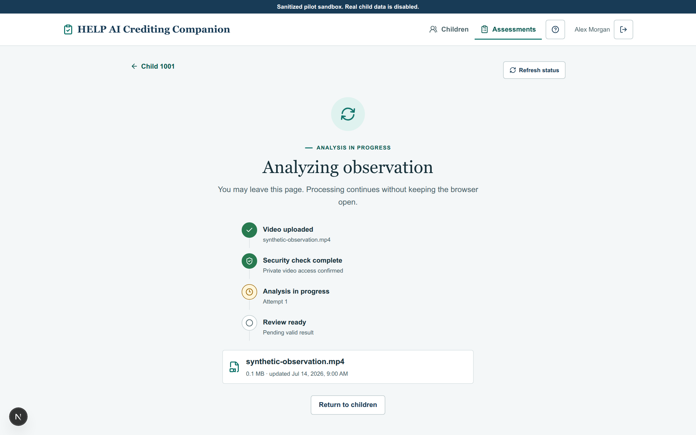
Current state: upload and security checks passed; analysis attempt 1 is still running.
Wait for the page to update automatically, or use Refresh status. You may safely return to children while processing continues.
It preserves a processing attempt, validates the result, and exposes review only after an all-or-nothing valid result is ready.
A successful run reports the validated suggestions and draft-credit distribution before the review workspace opens.
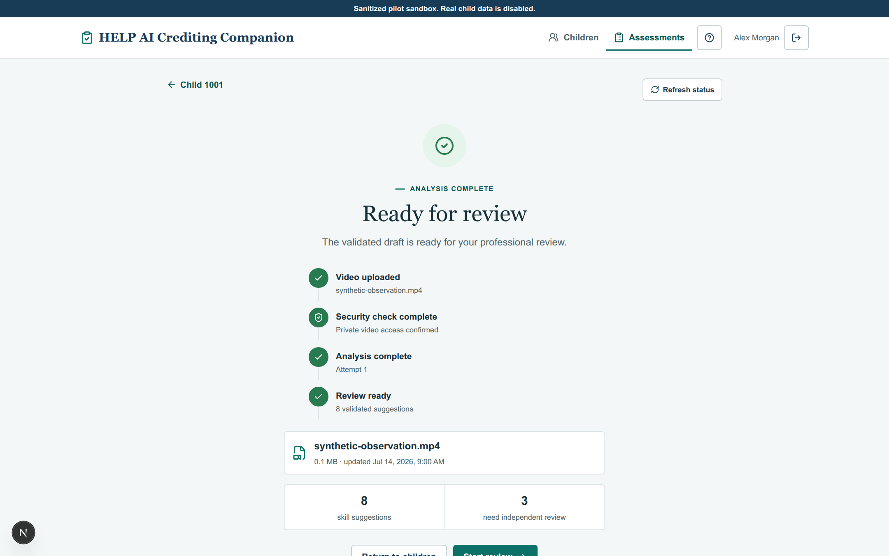
Example result: 8 validated suggestions, including items the model intentionally left unscored.
Select Start review. Returning to children remains safe if the review must happen later.
All four milestones show complete: upload, security, analysis, and review readiness.
Suggestions are grouped by AI draft credit on the left. The secure video and active decision editor stay together on the right.
At the top: reviewed progress and Review summary. The list itself shows Present, Emerging, Not observed, and Leave blank groups.
Compare the skill suggestion with the observation video and evidence before choosing an educator credit.
AI confidence is model certainty, not an accuracy score. The educator remains responsible for every included or dismissed item.
Evidence is collapsed by default. Open it only when needed, then use its short explanation and timestamp to verify the observation yourself.
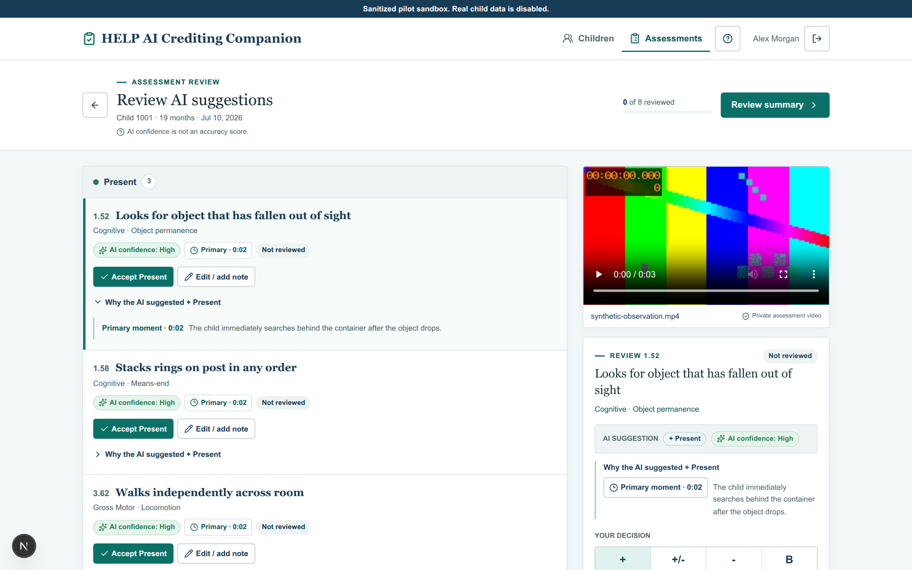
Action: open Why the AI suggested… under the current suggestion.
Seek to the indicated moment, watch enough surrounding context, and decide whether the behavior supports a credit.
An uncertain item has no proposed credit. The educator can choose Present, Emerging, Not observed, or Blank; N/A, Atypical, and the O concern flag remain educator-only choices.
The editor records the educator-owned credit, optional O concern flag, context, and decision origin. Progress advances only after a successful save.
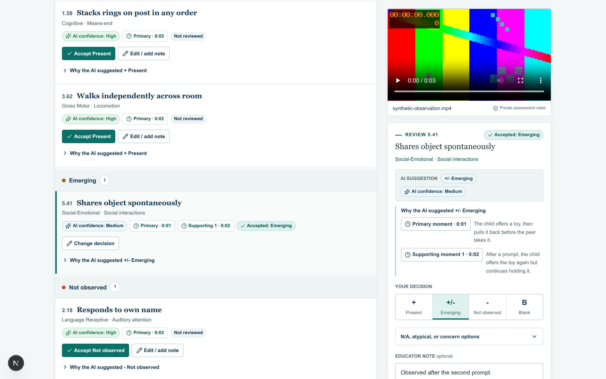
Example: Emerging is selected and the note records that the behavior occurred after the second prompt.
Select the final credit, add useful observation context, then choose Save decision. Repeat for every suggestion.
Use Add skill AI missed, then choose Domain/section, Strand, Skill, and Credit. The added skill is clearly attributed to the educator.
Review summary opens the server-derived totals. Finalization remains unavailable until every suggestion has an educator decision.
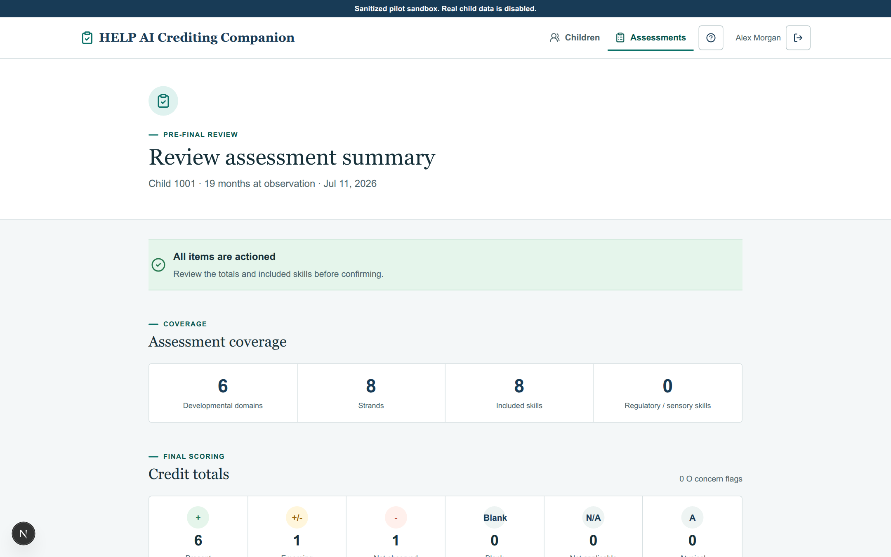
Complete state: All items are actioned; 8 skills are included in the shown example.
Review developmental-domain, strand, skill, and regulatory/sensory coverage, then check all credit totals and O concern flags.
Accepted draft, Overridden, Scored independently, and Dismissed explain how the educator arrived at the result.
The lower summary lists exactly what will be included, including credit, skill, domain, decision origin, and educator note when one exists.
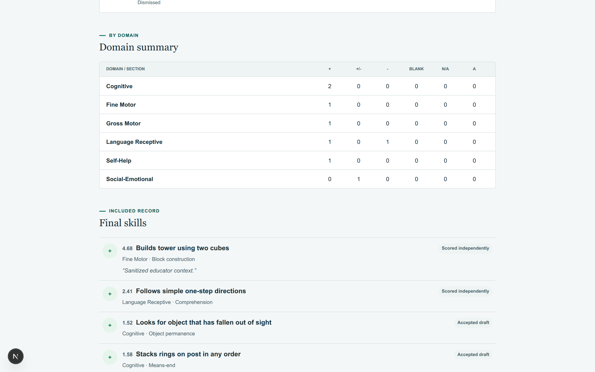
Traceability: each item retains its path, such as Scored independently or Accepted draft.
Read the included skills, confirm notes are appropriate, and make sure dismissed suggestions are not mixed into the included record.
When the list matches the educator's intended assessment, select Confirm final assessment.
The confirmation repeats the included and dismissed counts and makes the read-only consequence explicit before anything is locked.
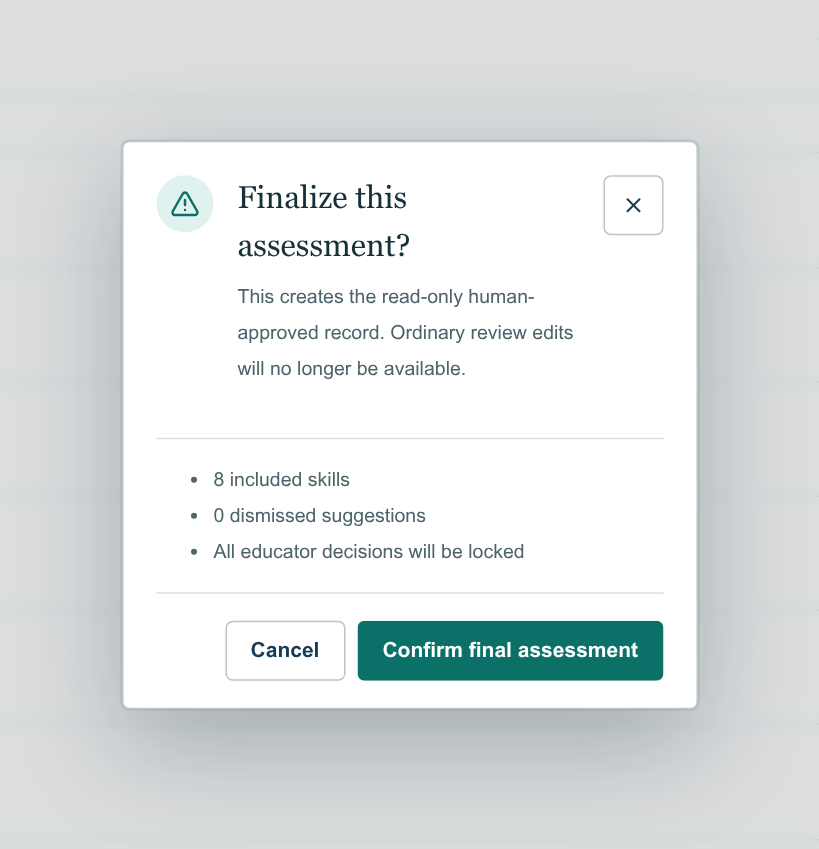
Verify the number of included skills and dismissed suggestions. The dialog states that educator decisions will be locked.
Select Cancel to keep editing, or Confirm final assessment to create the immutable record.
A successful confirmation opens the finalized assessment for the same child and observation.
The final view identifies the child and observation, records who confirmed it and when, and presents the educator decisions as read-only.
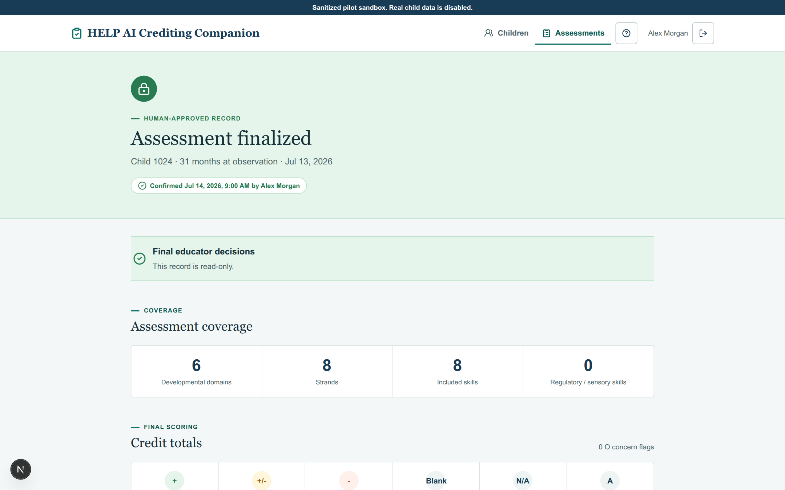
Final state: Child 1001, observation Jul 11, 2026, confirmed by Alex Morgan in the sanitized pilot.
Coverage, credit totals, decision paths, domain summary, final skills, educator notes, confirmation identity, and confirmation time.
Use Download PDF or Print when a portable record is needed, then return to the child's assessment history.